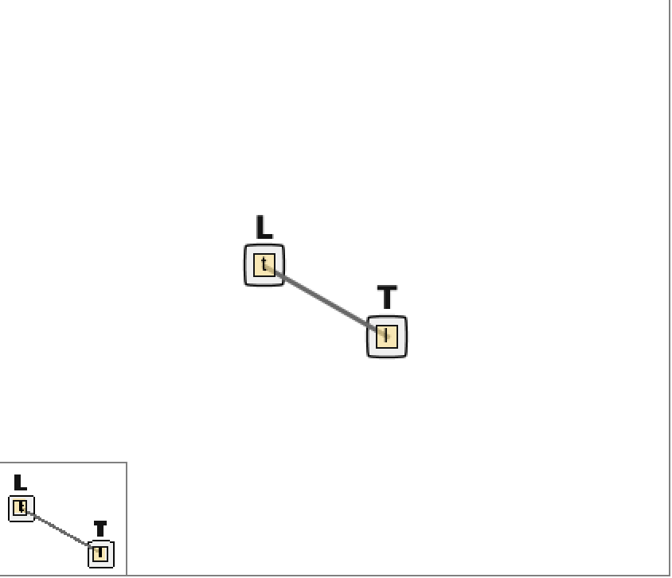

Software Tutorial: Getting Started with BioNetGen and Modeling Ligand-Receptor Dynamics
This collection of tutorials will gradually build up from scratch a chemotaxis simulation using BioNetGen.
In this tutorial, we will:
- set up BioNetGen;
- explore several key aspects of BioNetGen modeling: rules, species, simulation method, and parameters
- use BioNetGen to model ligand-receptor dynamics and compute a steady-state concentration of ligands and receptors.
What is BioNetGen?
BioNetGen is a software application for specification and simulation of rule-based modeling. In past modules, we have worked with chemical reactions that can be thought of as rules (e.g., “whenever an X particle and a Y particle collide, replace them with a single X particle”). The chemotaxis pathway also can be thought of as a set of biochemical rules specifying a set of mathematical equations dictating molecule concentrations. Our larger goal is to use BioNetGen to translate these rules into a reasonable chemotaxis simulation, then visualize and interpret the results.
In this tutorial, we will focus only on modeling ligand-receptor dynamics, which we will use as a starting point for more advanced modeling later.
Installation and setup
RuleBender is the graphical interface for BioNetGen. Please download the version corresponding to your operating system. Here is a step-by-step installation guide.
Starting with Ligand-Receptor Dynamics
In this tutorial, we will build our model from scratch. If you like instead, you can download the completed simulation file here: ligand_receptor.bngl
In our system, there are only two types of molecules: the ligand (L), and the receptor (T). (The receptor is in fact a receptor complex because it is attached to additional molecules, which we will elaborate on later). The ligand can bind to the receptor, forming an intermediate, and the complex can also dissociate. We write this reaction as L + T <-> L.T, where the formation of the intermediate is called the forward reaction, and the dissociation is called the reverse reaction.
In our system, which starts with a quantity of free ligands and receptors, the numbers of these free molecules should drop quickly, because free ligands and free receptors are readily to meet each other. After a while, there will be more L.T in the system and therefore more dissociation; at the same time, because free L and T are less abundant, less binding happens. The system will gradually reach a steady-state where the rate of L and T binding equilibrates with L.T dissociation.
We will simulate reaching this steady state, which means that we will need to know the following two parameters:
- The rate of the forward reaction:
k_lr_bind [L][T], wherek_lr_bindis the rate constant. - The rate of the reverse reaction:
k_lr_dis[L.T], wherek_lr_disis the rate constant.
Equilibrium is reached when k_lr_bind [L][T] = k_lr_dis[L.T]. Our goal in this tutorial is to use BioNetGen to determine this equilibrium in molecule concentrations as a proof of concept.
First, open RuleBender and select File > New BioNetGen Project.

Save your file as ligand_receptor.BioNetGenl. Now you should be able to start coding on line 1.

Specifying molecule types
We will specify everything needed for this tutorial, but if you are interested, reference BioNetGen documentation can be found here.
To specify our model, add begin model and end model. Everything below regarding the specification of the model will go between these two lines.
We first add ligand and receptor molecules to our model under a molecule types section. Recall from the main text that we will call these molecules L(t) and T(l).
begin model
begin molecule types
L(t)
T(l)
end molecule types
end model
Specifying reaction rules and observables
As discussed in the main text, the ligand-receptor simulation will only need to apply a single bi-directional reaction.
begin reaction rules
LR: L(t) + T(l) <-> L(t!1).T(l!1) k_lr_bind, k_lr_dis
end reaction rules
Once we have specified reactions, we can define the molecules whose concentrations we are interested in tracking. These molecules are added to an observables section.
begin observables
Molecules free_ligand L(t)
Molecules bound_ligand L(t!l).T(l!l)
Molecules free_receptor T(l)
end observables
Initializing unbound molecule counts
Next, we need to specify a variable indicating the number of molecules with which we would like to initialize our simulation. We place these molecules within a seed species section. We are putting L0 unbound L molecules, and T0 unbound T molecules at the beginning; we will set these parameters later.
Note that we do not specify an initial number of bound L.T complexes, meaning that the initial concentration of these complexes will be equal to zero.
begin seed species
L(t) L0
T(l) T0
end seed species
Specifying parameters
Now we will declare all the parameters we introduced in the above sections. We will start with setting L0, the initial concentration of ligand, to 10,000, and T0, the initial concentration of receptors, to 7000. It remains to set the reaction rates for the forward and reverse reactions.
BioNetGen is unitless, but for simplicity, we will assume that all concentrations are measured in the number of molecules per cell. The reaction rates are conventionally thought of in the units of mole (M) per second, where 1 M denotes Avogrado’s number, which is approximately 6.02 · 1023.
Because of the differing units of molecules per cell and mole per second, we need to do some unit conversion here. The volume of an E. coli cell is approximately 1µm3, and so 1 mole per liter will correspond to 1 mole per 1015 µm3, or 6.02 · 108 molecules per cell.
For bimolecular reactions, the rate constant should have unit M-1s-1, and we divide with NaV to convert to (molecules/µm3)-1)s-1. For monomolecular reactions, the rate constant have unit s-1, so no unit conversion is required.
Although the specific numbers of cellular components vary among each bacterium, the components in chemotaxis pathway follows a relatively constant ratio. For all the simulations in this tutorial, we assign the initial number for each molecule and reaction rate by first deciding a reasonable range based on in vivo quantities 123. Our parameters are summarized below.
begin parameters
NaV 6.02e8 #Unit conversion M -> #/µm^3
L0 1e4 #number of ligand molecules
T0 7000 #number of receptor complexes
k_lr_bind 8.8e6/NaV #ligand-receptor binding
k_lr_dis 35 #ligand-receptor dissociation
end parameters
Important note: The parameters section has to appear before the reaction rules section.
If you save your file, then you should see a “contact map” in the upper right corner of the window indicating the potential bonding of L and T. This contact map is currently very simplistic, but for more complicated simulations it can help visualize the interaction of species in the system.

Specifying simulation commands
We are now ready to run our simulation. At the bottom of the model specification (i.e., after end model), we will add a generate_network and simulate command. The simulate command will take three parameters, which we specify below.
Method. We will use method=>"ssa" throughout these tutorials, which indicate that we are using the SSA (Gillespie) algorithm that was described in the main text. BioNetGen also includes the parameters method=>"nf" (network-free) and method=>"ode"(ordinary differential equations) that you can try. See the following article for more details if you are interested in these two approaches: https://www.ncbi.nlm.nih.gov/pmc/articles/PMC5079481.
Time span.t_end, the simulation duration. BioNetGen simulation time is unitless; for simplicity, we assume our time unit is the second.
Number of Steps. n_steps tells the program how many time points to break the simulation into when measuring the concentrations of our observables.
generate_network({overwrite=>1})
simulate({method=>"ssa", t_end=>1, n_steps=>100})
The following code contains our complete simulation, which you can also download here: ligand_receptor.bngl.
begin model
begin molecule types
L(t)
T(l)
end molecule types
begin observables
Molecules free_ligand L(t)
Molecules bound_ligand L(t!l).T(l!l)
Molecules free_receptor T(l)
end observables
begin parameters
NaV2 6.02e8 #Unit conversion to cellular concentration M/L -> #/um^3
L0 1e4 #number of ligand molecules
T0 7000 #number of receptor complexes
k_lr_bind 8.8e6/NaV2 #ligand-receptor binding
k_lr_dis 35 #ligand-receptor dissociation
end parameters
begin reaction rules
LR: L(t) + T(l) <-> L(t!1).T(l!1) k_lr_bind, k_lr_dis
end reaction rules
begin seed species
L(t) L0
T(l) T0
end seed species
end model
generate_network({overwrite=>1})
simulate({method=>"ssa", t_end=>1, n_steps=>100})
STOP: Based on our results from calculating steady-state concentration by hand in the main text, predict how the concentrations will change and what the equilibrium concentrations will be.
Running our simulation
We are now ready to run our simulation. To do so, visit Simulation at the right side of the contact map and click Run. You can then visualize the results of the simulation, showing changes in concentration over time. These results are also stored as a .gdat file in the folder result/your time of simulation.
Is the result you obtain what you expected? In the main text, we will return to this question and then learn more about the details of bacterial chemotaxis in order to expand our BioNetGen model into one that fully reflects these details.
-
Li M, Hazelbauer GL. 2004. Cellular stoichiometry of the components of the chemotaxis signaling complex. Journal of Bacteriology. Available online ↩
-
Spiro PA, Parkinson JS, and Othmer H. 1997. A model of excitation and adaptation in bacterial chemotaxis. Biochemistry 94:7263-7268. Available online. ↩
-
Stock J, Lukat GS. 1991. Intracellular signal transduction networks. Annual Review of Biophysics and Biophysical Chemistry. Available online ↩